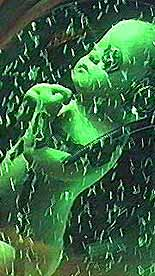
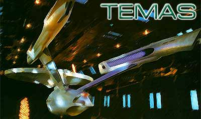

|
 |
 |

Categorias:
Srie
Clssica
A Nova Gerao
Deep Space Nine
Voyager
Enterprise
Fico e
Fantasia
|
A Nova Gerao TEMA: "Os amores de Picard" (TNG001) Descrio: O artigo deve colocar em ordem cronolgica todos os relacionamentos que Picard j teve e que foram citados em tela. Qual foi a mulher mais especial que ele j encontrou e por qu? Casos apenas sugeridos em tela podem ser expandidos e detalhados com material no-cannico, deixando isso claro no artigo. Bom humor e sensibilidade so recomendados. Grau de dificuldade: Fcil. Condio: Disponvel para ser escolhido.
TEMA: "As mltiplas faces de Brent Spiner" (TNG002) Descrio: O artigo deve tratar de todos os episdios de Jornada em que Brent Spiner faz mltiplos papis. Os episdios devem ser apresentados em ordem cronolgica e a qualidade relativa das atuaes deve ser discutida. Grau de dificuldade: Fcil. Condio: Disponvel para ser escolhido.
TEMA: "Picard: Marcas do passado" (TNG003) Descrio: Escreva uma histria que combine "aquele" problema que Picard teve nos tempos da Academia (em que foi ajudado por Boothby), a morte de Jack Crusher (colocando Beverly e Wes na histria tambm) e a misso em que Picard assume o comando da Stargazer. Grau de dificuldade: Mdio. Condio: Disponvel para ser escolhido. |